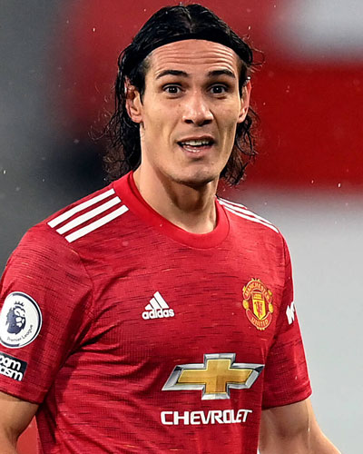
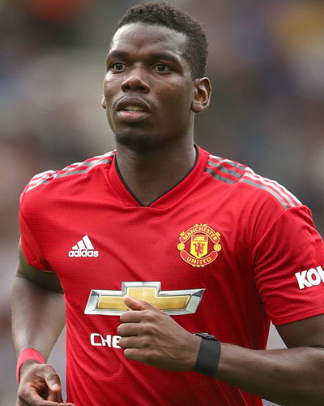
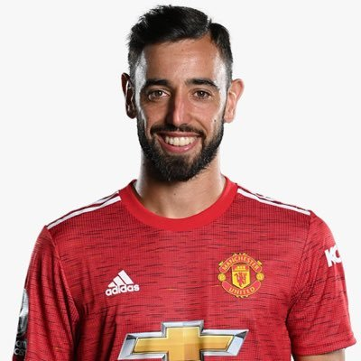
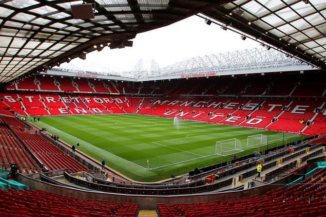

Player
- 
- 
- 
Old Trafford
- 

Manchester United Football Club
is a professional football club based in Old Trafford, Greater Manchester, England, that competes in the Premier League, the top flight of English football. Nicknamed "the Red Devils", the club was founded as Newton Heath LYR Football Club in 1878, changed its name to Manchester United in 1902 and moved to its current stadium, Old Trafford, in 1910.